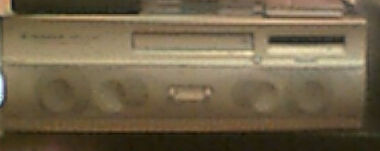
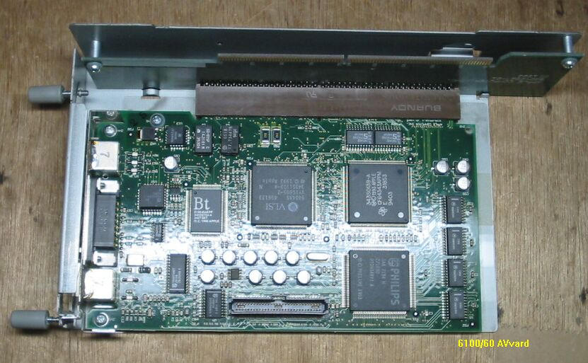
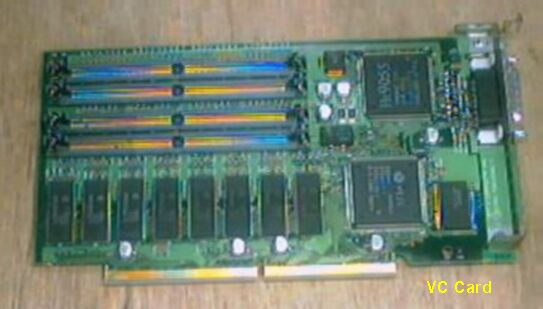

Pioneer MPC-GX-1 G3 改造について

Pioneer MPC-GX-1は、オーディオメーカーとして有名なパイオニアが、APPLEのPowerPC6100/66AVを、 自社製のオーディオセットのような筐体に収め、売り出した、いわゆるMAC互換機で、特徴はいい音が出る
ことです。APPLE社の方針変更でMAC互換機は一切作られなくなってしまったので、新しいMACユーザの中には、 こんなマシンがあったことなど、まったく知らない方がおられるのではないかと思います。音がいいので、
日常使うMACとして使っていたわけですが、動作が遅く、使いずらく感じてきたので、CRESCENDOのNuBus系 PowerMacitosh用プロセッサ・アップグレードカードC61-G3-1M266を入れてみました。AVカードのブラケット
部分どこかに接触するようで、ワッシャをかましたりして、何とか正常に動作するようになったのですが、 CPUがものすごく熱くなります。代理店によると、メーカーは100度まで大丈夫、と言っているようですが、
私のマシンで最高80度くらいです。スピードは確かに早くなりましたが、不安定になり、２～３日に一回 フリーズするようになってしまいました。まあ使えるかなというところです。
2002年2月17記載
GX-1のその後
このマシンのOSは最初7.5.3で次に8.1、G3化後に8.6で使ってきました。8.1にしたときには、オリジナルの CDROMが使えなくなり、パイオニアのドライバを入れ直しました。8.6にしたときには、長く使ってきた
ATOK8が使えなくなり、やむなく”ことえり”で文書を書くことになり、MSIMEよりもさらに使いづらく、 かなりストレスがたまりました。OS9”ことえり”はいくらか使い良さそうなので、最近になってVersionUp
をしてみました。まず最初に出会った問題は、Ｃ起動ができないことです。起動時にキーボードのＣを押した ままにしても、内部ＨＤから立ち上がってしまいます。APPLE純正のCDROMドライブではないので、当然のこと
なのですが、CDROMから起動しないと、OSのインストールができません。そこでコントロールパネルの、起動 ディスクでCDROMを選択し、再起動したところ、うまくCDROMから起動したくれました。OSのインストールは
順調に終わり、アプリケーションを入れようとしたのですが、CDROMが無くなってしまいました。古い パイオニアのドライバは、使えませんとはねられてしまいます。そこで、やむをえず、壊れた7200から
はずした、SONYの４倍速CDROMに交換しました。ちょっと前面の見栄えが悪くなりましたが、これでまた しばらく使えるかと、ほっとしているところです。古いマシンを使うのは、楽しみではありますが、なかなか
骨がおれるものです。
GX-1へのVCカード取り付け


最後のパワーアップは、ネックとなっているビデオ表示能力のアップです。できる方法は、AVカードを 8100で使われていたVCカードに交換することです。(2002/7/3記)
8100用VCカードは、以前はかなり高価で、ちょっと試してみるのを、ためらわせるものでした。今回、 秋葉原の路上で、何と千円で見付けました。他の、MAC用のロジックボードなどと一緒に、段ボールに入れられて、投げ売りの状態でした。ブラケットの部分が、ちょっと錆びていますが、使えそうです。
持ち帰ってから、7100に取り付けテストしたところ、難なく動作しました。
このカードの取り付け自体は簡単なのですが、長さが、数mm長くなるので、HDとぶつかってしまいます。 そのため、HDマウンタ加工し、その分ずらしてやる必要があります。取り付けができ、表示能力を見ると
20%位よくなっています。WEBのブラウズが少しスムーズになったかなと感じています。 (2002/7/17追記)
PPCマッキントッシュのページに戻る